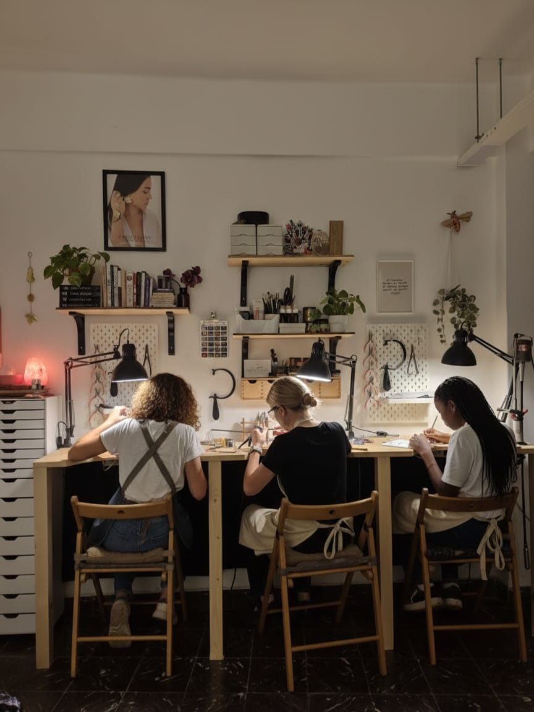
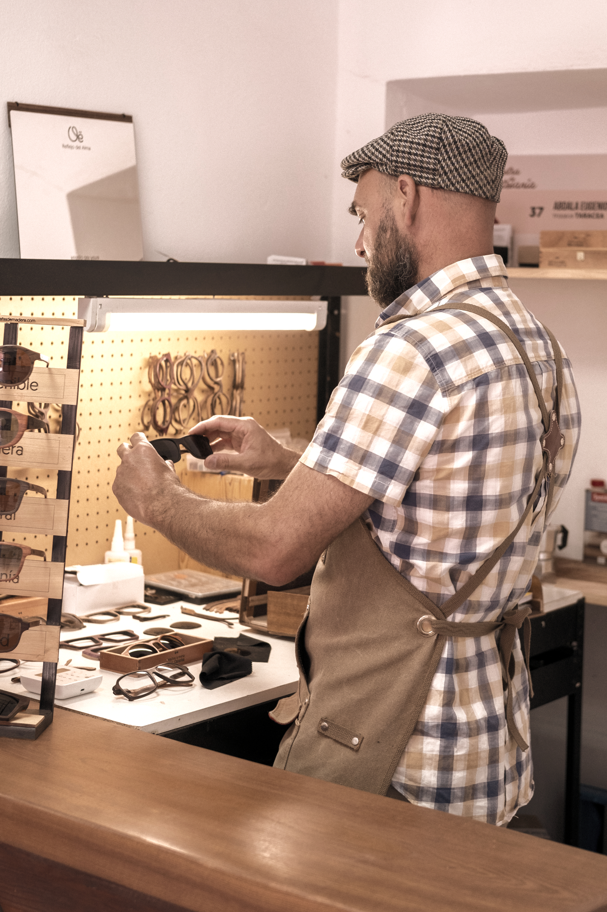
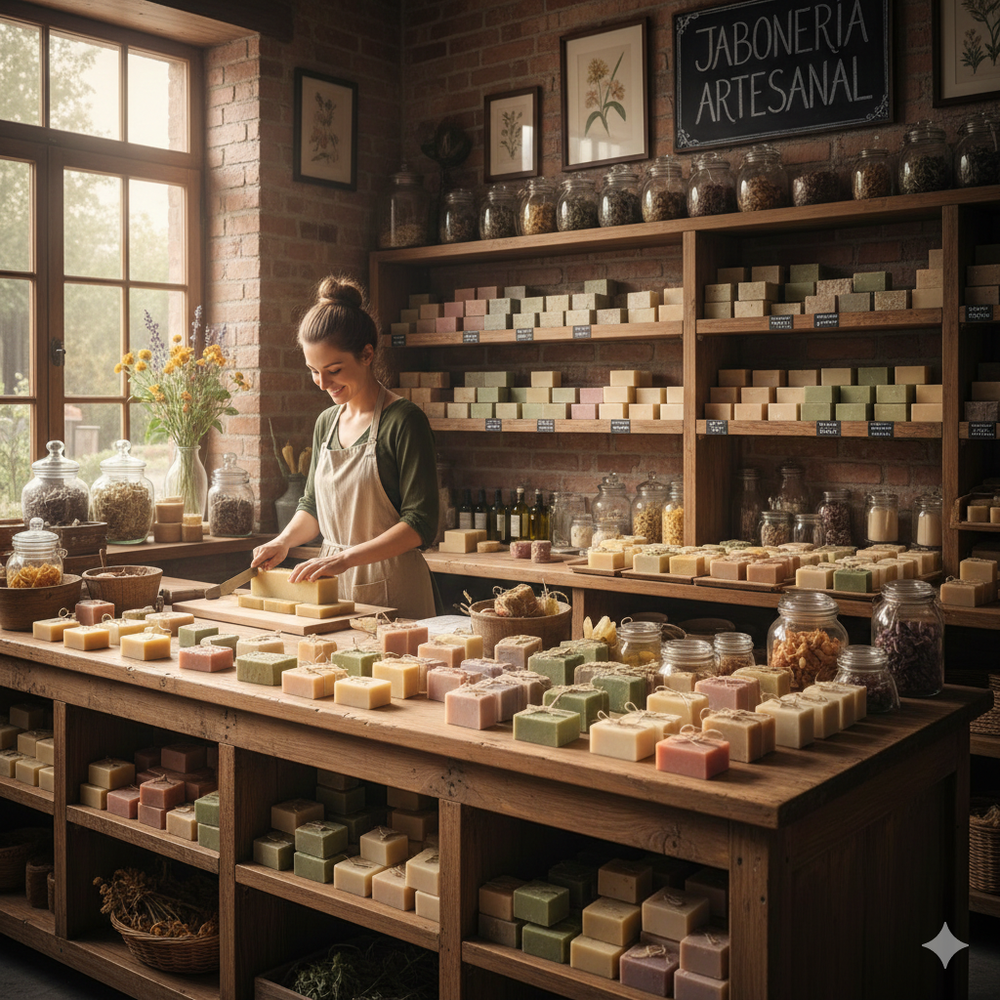
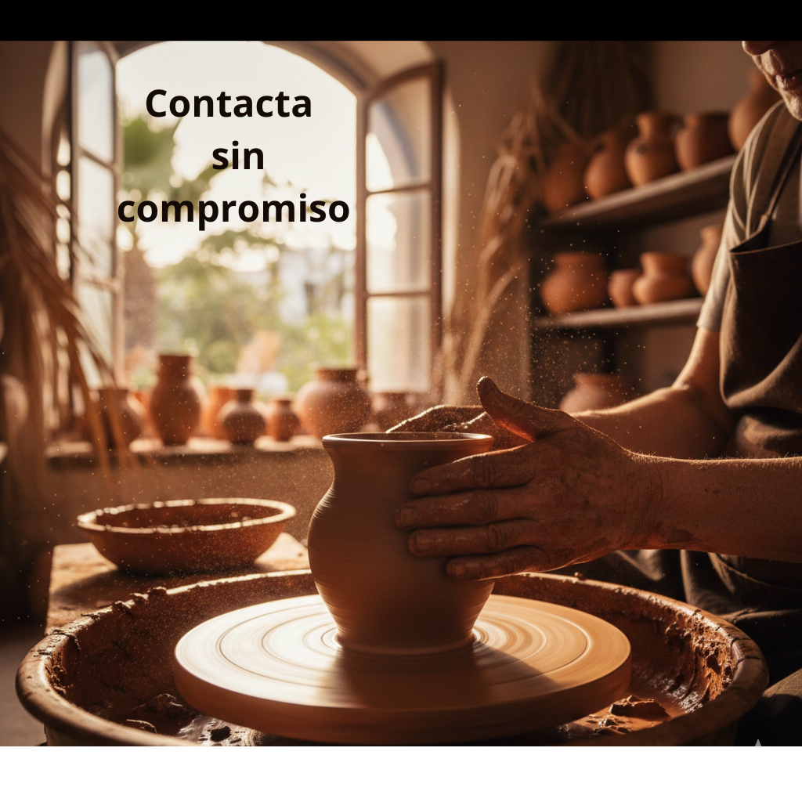
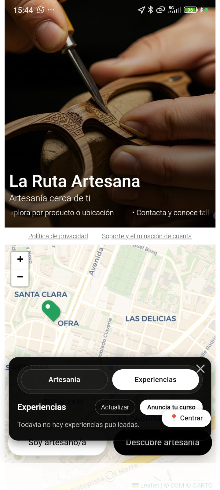
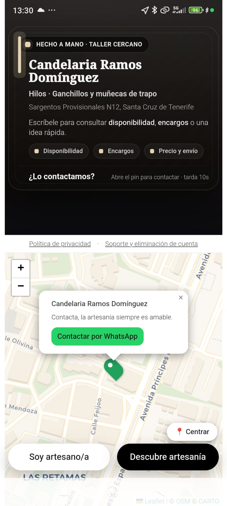
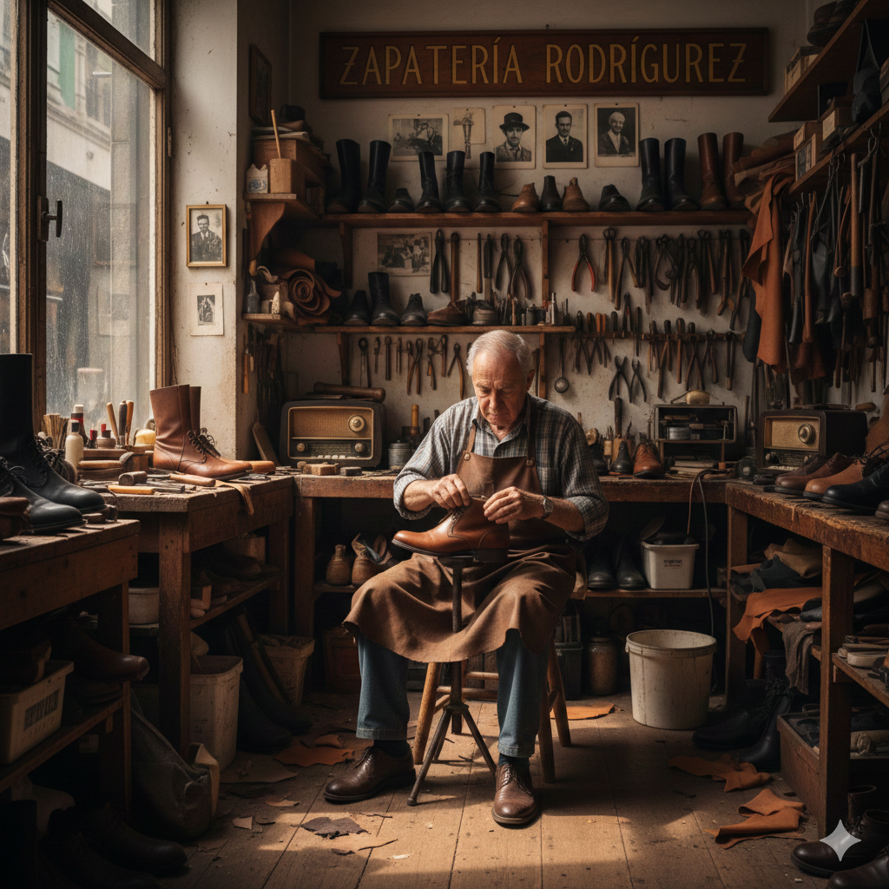
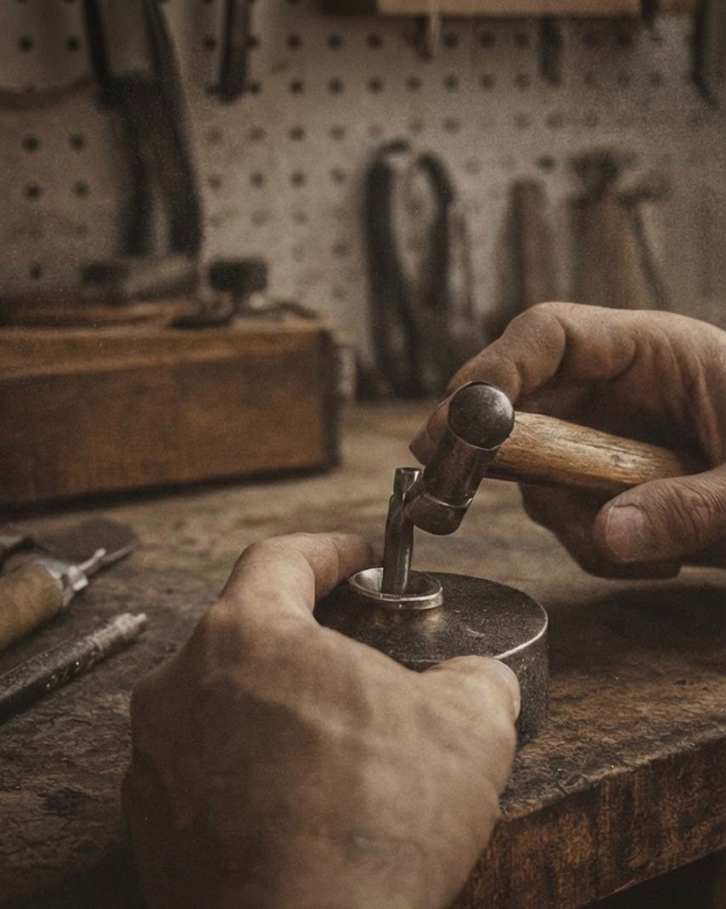

Una aplicación que une personas artesanas
con personas que valoran lo hecho a mano
La artesanía vive escondida. Los mejores talleres no aparecen en Google, las personas artesanas más talentosas no tienen presencia digital, y las personas que valoran lo hecho a mano no saben dónde encontrarlas. La Ruta Artesana existe para cambiar eso.



El mapa se llena de pins verdes. Cada pin es una persona artesana real cerca de donde estás. Locales, turistas, cualquier persona que valore lo hecho a mano.
Toca cualquier pin y conoce a la persona artesana. Su oficio, sus productos, su historia. Cerámica, joyería, madera, cuero, textiles. Cada taller es único.
Un mensaje de WhatsApp y el vínculo empieza. Pregunta, visita el taller, encarga una pieza. Lo hecho a mano merece una conversación real.


Abre la app, encuentra el pin verde más cercano y descubre el taller que hay detrás. Contacta directamente con la persona artesana por WhatsApp. Sin intermediarios, sin comisiones.
Descarga en Google Play

Lleva tu taller a miles de personas que buscan exactamente lo que haces. Alta gratuita el primer año.